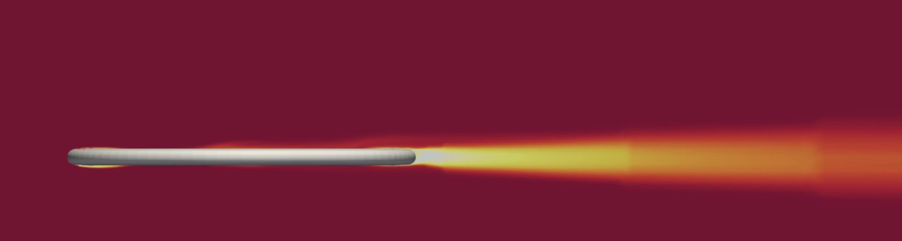
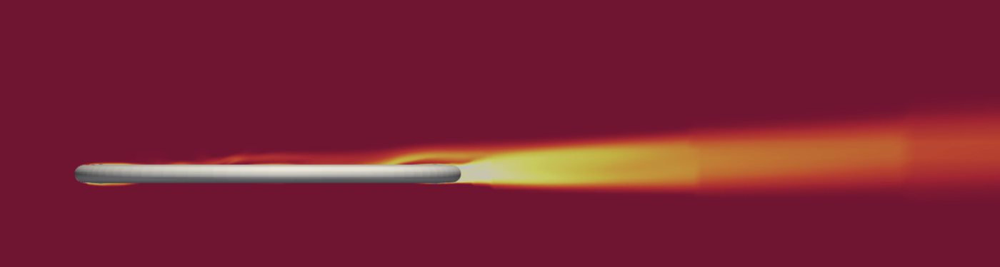
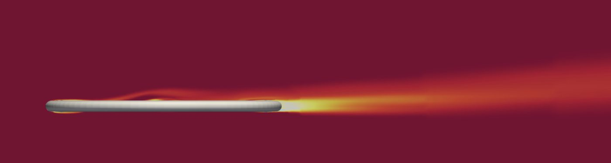
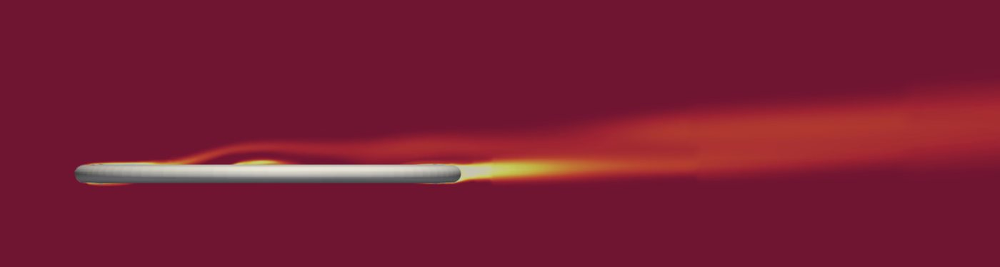
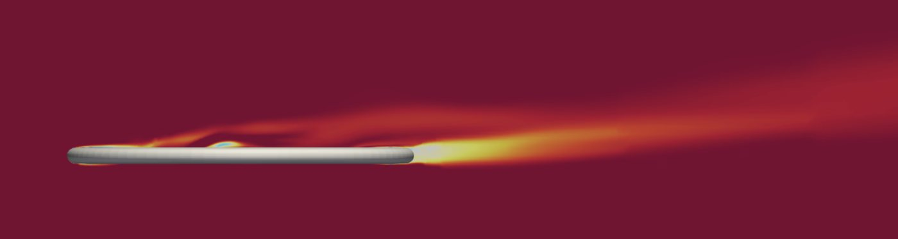
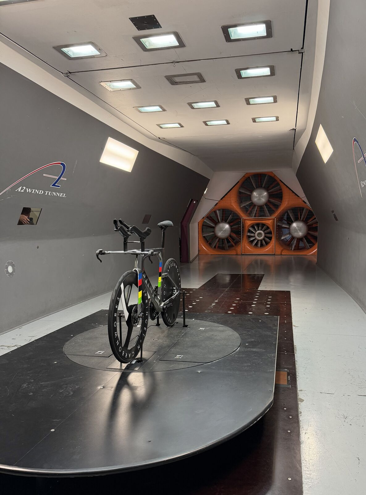

Results
The 95 mm rim is part of the wheelset raced by the company's sponsored athletes at the Ironman World Championship in Kona. Over the summer it went through several rounds of redesign, and each round lowered race-weighted drag. Narrowing the rim gave the first large gain. Setting the maximum width at 105% of tire width and placing it at 40% of rim depth gave the second. Tuning the shoulder and trailing-edge splines brought the total reduction to about 36%.
Most of that gain comes in crosswind. Head-on, the final profile has about 19% less drag than the existing rim. At 5° the difference is 36%, and by 10° the new profile turns its side force into net forward thrust, much like a sail. Riders spend most of a race between 2.5° and 7.5° of yaw, which is why designing for those angles paid off.
Process
- Parametric model. Early profiles were elliptical shapes based on NACA airfoil theory. To search more systematically, I rebuilt the rim cross-section in SolidWorks and Fusion 360 as a spline controlled by four parameters: maximum width, the position of maximum width, shoulder length, and trailing-edge length. All profiles were modeled on a 28 mm tire.
- CFD. Each profile was simulated in NablaFlow AeroCloud across a yaw sweep from 0° to 20°. Over the summer the intern team simulated more than 100 profiles at 65, 75, and 95 mm depths.
- Race weighting. I wrote a Python script that weights the drag at each yaw angle by the share of race time triathletes spend there, so every design is scored on the drag it would see over a full race. I computed the weighting two ways, by nearest neighbor and by interpolation, to confirm the rankings did not depend on the method.
- Sensitivity analysis. I compared results across the 75 and 95 mm data sets to find which parameters drove drag at each depth and turned them into design guidelines for the engineering team.





0°What we learned
- Designing at 0° points the wrong way. Head-on, drag kept falling as rims got wider, down to about 115% of tire width. Once weighted across race yaw angles, the best profiles were narrower, at 100–105%, because they held up better in crosswind. Even within the final set, the profile with the lowest drag at 0° was not the fastest over a race.
- Maximum width belongs near 40% of rim depth. This placement performed best at both depths and carried into the final 95 mm profile.
- Priorities change with depth. On the 75 mm rim, maximum width had the largest effect. On the 95 mm rim, shoulder length and the position of maximum width mattered as much or more, because the longer section behind the widest point needs more room to recover pressure.
- The trailing edge can be set early. It had the same optimum at both depths, and balanced side and bottom spline lengths outperformed profiles dominated by either one.
All results are from CFD on a rim-and-tire model and are shown relative to the existing profile. Absolute values and final geometries are proprietary to Princeton Carbon Works.
